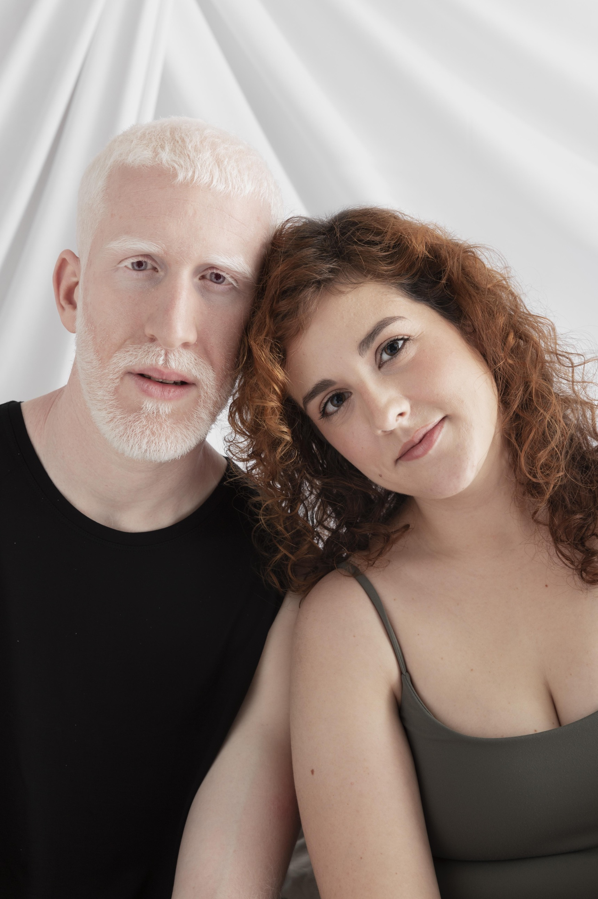

Readable long-form content
Each article is written as evergreen advice, not thin keyword filler.
A fresh editorial home for trans singles, trans women, and respectful admirers who want safer dating, better conversations, and relationships that feel human from the first message.
Trans Love uses a quieter magazine layout, readable long-form pages, visible article images, internal links, and structured data so both visitors and search engines can understand the site quickly.
Each article is written as evergreen advice, not thin keyword filler.
Canonical URLs, Article schema, FAQ schema, breadcrumbs, sitemap, and crawlable HTML links.
The content focuses on safety, privacy, pacing, and real chemistry for trans dating.
Each article has its own page, a relevant image, unique title, FAQ answers, and article metadata.

A practical, original guide to building real trans love online through clear profiles, respectful pacing, emotional safety, and better first-date choices.
Learn how to write a trans dating profile that attracts respectful matches, better first messages, and more compatible conversations.

A unique guide to writing first messages in trans dating that feel warm, specific, respectful, and easy to answer.
A safety-focused SEO article about protecting privacy, setting boundaries, recognizing red flags, and planning safer first dates in trans dating.
An original SEO article about soft romance, emotional pacing, respect, and slow-building love in trans relationships.